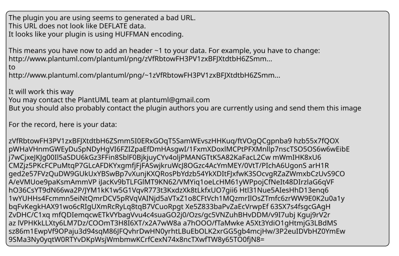

🏢 System Coordinator FSM
Scenario: Top-level System Coordination
Type: Hierarchical State Machine
Key Features: Coordinates all subsystems, manages system-wide states, dispatches events to appropriate subsystems.
- States: SYS_INIT, SYS_IDLE, SYS_RECORDING, SYS_UPLOADING, SYS_ERROR, SYS_SLEEP, SYS_SHUTDOWN
- Events: INIT_COMPLETE, REC_START, REC_STOP, UPLOAD_COMPLETE, POWER_ON, POWER_OFF, ERROR, RESET
- API: system_coordinator_dispatch_event()
- Code: system_coordinator.c / system_coordinator.h

API call sequence diagram
📡 Communication FSM
Scenario: Bluetooth & Wi-Fi Communication
Type: Mealy / Moore
Key Features: Connection management, data transfer, error recovery.
- States: DISCONNECTED, CONNECTING, CONNECTED, TRANSFERRING, ERROR
- Events: connect, disconnect, send_data, receive_data, error
- API: comm_fsm_dispatch_event()
- Code: comm_fsm.c / comm_fsm.h

State diagram
🔋 Power FSM
Scenario: Power Management
Type: Mealy / Moore
Key Features: Battery monitoring, charging states, low‑power sleep.
- States: OFF, ON, CHARGING, LOW_BATTERY, SLEEP
- Events: power_on, power_off, charge_start, charge_complete, battery_low
- API: power_fsm_dispatch_event()
- Code: power_fsm.c / power_fsm.h

State diagram
🎵 Audio FSM
Scenario: Audio Playback & Recording
Type: Mealy / Moore
Key Features: Audio routing, volume control, noise cancellation.
- States: IDLE, PLAYING, PAUSED, RECORDING, MUTED
- Events: play, pause, stop, record, volume_up, volume_down
- API: audio_fsm_dispatch_event()
- Code: audio_fsm.c / audio_fsm.h

State diagram
🎙️ Recording FSM
Scenario: Voice Recording
Type: Mealy / Moore
Key Features: Start/stop recording, buffer management, quality settings.
- States: IDLE, RECORDING, PAUSED, PROCESSING, UPLOADING
- Events: rec_start, rec_stop, rec_pause, rec_resume, upload_complete
- API: recording_fsm_dispatch_event()
- Code: recording_fsm.c / recording_fsm.h

State diagram